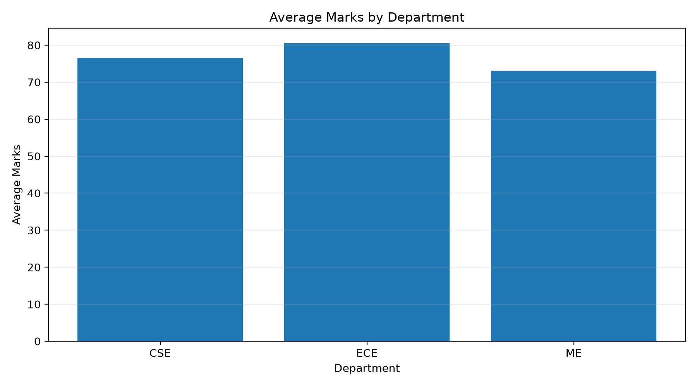
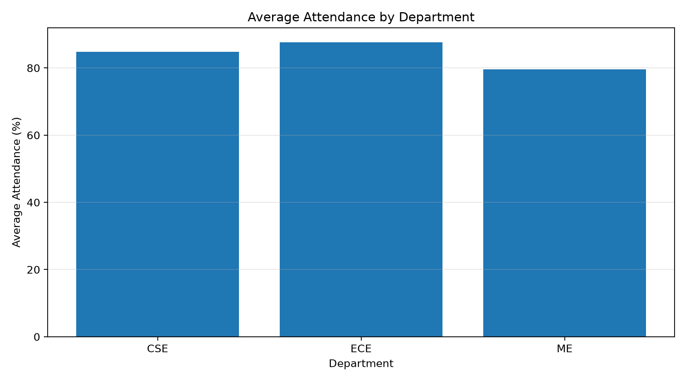
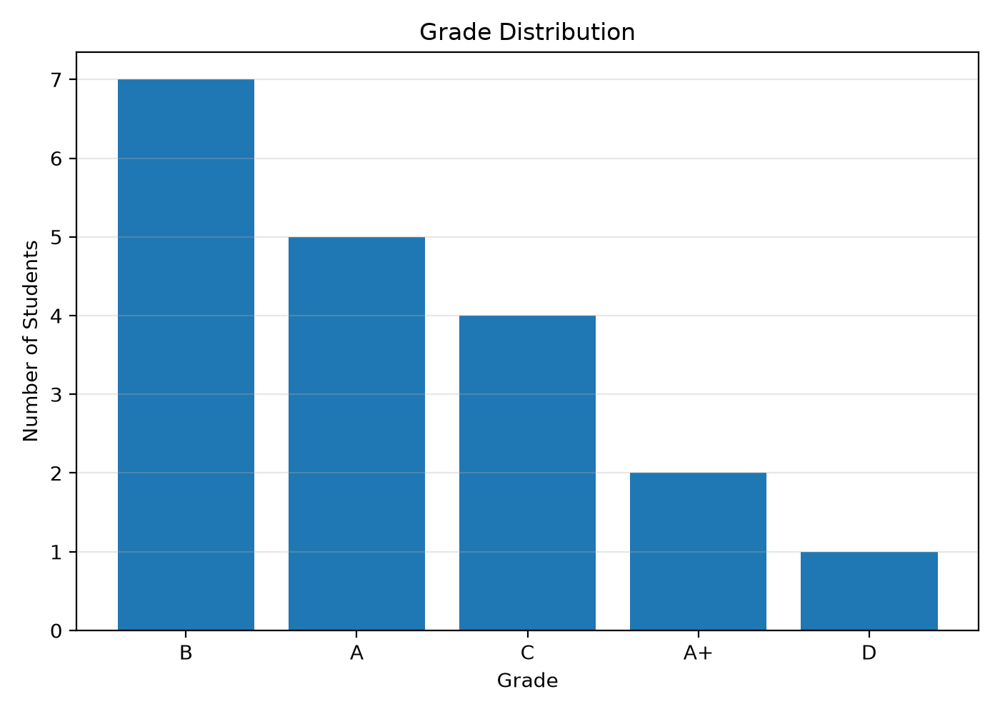

Final students: 19 Average marks: 76.74 Average attendance: 84.16%
| Metric | Value |
|---|---|
| Original Rows | 20 |
| Original Columns | 5 |
| Duplicates Removed | 1 |
| Missing Marks Filled | 2 |
| Missing Attendance Filled | 1 |
| Final Rows | 19 |
| Final Columns | 5 |
| Department | Students | Average_Marks | Average_Attendance | Highest_Marks |
|---|---|---|---|---|
| CSE | 9 | 76.61 | 84.78 | 95.0 |
| ECE | 5 | 80.60 | 87.60 | 88.0 |
| ME | 5 | 73.10 | 79.60 | 89.0 |
| Grade | Students |
|---|---|
| B | 7 |
| A | 5 |
| C | 4 |
| A+ | 2 |
| D | 1 |



The raw dataset was cleaned automatically by handling missing values, removing duplicates, standardizing department names, validating numeric fields, and generating summaries and visualizations.